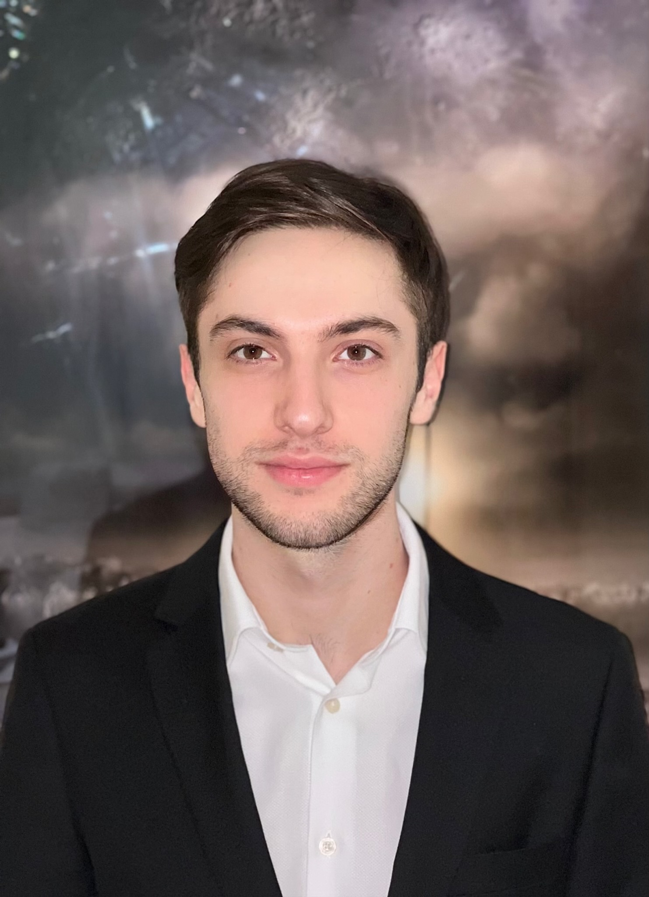

About Me
I’m a software engineer and recent Computer Science graduate with a strong focus on backend development, distributed systems, and full-stack application design. I enjoy solving complex problems and building scalable, production-ready software—whether that means optimizing high-traffic APIs, designing secure REST services, or automating real-world workflows.
I’ve worked extensively with Java and Spring Boot, Node.js/Express, and Python, building modular backends, improving database performance, and implementing CI/CD pipelines for reliable deployments. I’m comfortable working across the stack, from containerized microservices and OCR-based systems to clean, intuitive React dashboards, and I thrive in Agile environments that value maintainable, well-documented code.
Outside of engineering, I’m deeply creative—I love music and spend my free time playing and producing it, which fuels the same problem-solving mindset I bring to software: experimentation, structure, and iteration. I’m driven by continuous learning, thoughtful system design, and building things that actually make an impact.
I’m currently seeking opportunities to grow as an engineer and contribute to meaningful products. Feel free to reach out: HaykTserunyanCS@outlook.com
